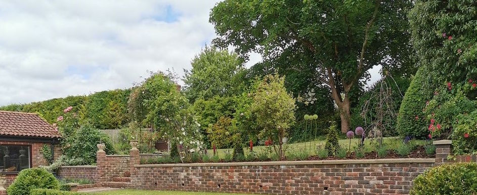

Barton Garden Services
For all your Landscaping and Gardening Needs
Based in Petersfield; we offer professional gardening and landscaping services across Hampshire.
We work with fully qualified and experienced tradespeople that we trust, to deliver client solutions that exceed expectations every time. We can confidently handle work on any sized garden, across both residential and commercial premises.
We pride ourselves on our flexibility and availability - meaning we tailor all solutions to you and your budget.
Experience
Will, the founder of Barton Garden Services, is proud to offer all aspects of garden maintenance and landscaping for residential and commercial clients
Regardless of whether your soft planting is natural and subtle or big and bold; it is important to use a horticultural specialist with the knowledge and skill to deliver a finished project to be proud of, with assurance that the plants selected for the bed are suited to the position, soil type and are spaced correctly to ensure that for years to come the bed will perform as planned.
Recent ProjectsPhilosophy
Client satisfaction is important to Will and the team, at BGS..
All tasks, from reshaping shrubs and pulling weeds, to laying new turf and porcelain patios - are undertaken with the upmost care. The team are also extremely passionate about increasing biodiversity....
Will is an accredited partner with a leading company who grow and sell wildflower products. Will has undertaken a course to increase his knowledge on the products and is able to advise which will be best suited for the patch in question from a Native Enriched turf to fill a bank with a ‘cottage garden look’ to a turf designed for SuD’S which can help to assist in breakup of pan or soil compaction for maximum water dispersal. Will is extremely passionate about Wildflowers and firmly believes that every garden should have a patch, to help to increase biodiversity. It has such a positive impact on our ecosystems!
Contact BGS
07795 477789